What AirBreda looks like at each checkpoint, from the first plan to the full deployed
system. Earlier checkpoints are kept for reference; the current system is
Checkpoint 4.
CP 1
First Plan
Captures the understanding at Checkpoint 1, kept for reference. The current system is in
Checkpoint 4.
existed in the repo at the timedesigned but not yet built

Checkpoint 1 — planned ingestion with a raw S3 zoneOpen full size ↗
Components
Component
Role
Status
Luchtmeetnet API
Source of NO₂ (and PM2.5, PM10, NO) for NL10240. Hourly averages stamped at the end of the hour. No API key; fair use is 100 req / 5 min.
External
NDW open data
Source of A27 traffic flow (veh/h) and speed (km/h). Full-country files, so only 4 site IDs are extracted.
External
ingest_air.py
Air-quality ingestion. Containerised by Dockerfile.air (image airbreda-air).
Built, see Checkpoint 2
ingest_traffic.py (uses getTrafficReadings.py)
Traffic ingestion. Containerised by Dockerfile.traffic (image airbreda-traffic).
Built, see Checkpoint 2
S3 bucket
Archive of the per-site traffic CSVs.
Built for traffic only
RDS PostgreSQL
Stores cleaned, typed, deduplicated readings for querying and joining.
Built (single sensor_readings table)
Planned data flow per run
Fetch from the source.
Write the untouched payload to S3 under a time-partitioned key, e.g.
raw/luchtmeetnet/station=NL10240/date=2026-09-29/fetched_at=155242Z.json.
Parse and validate, then upsert into PostgreSQL.
If step 3 fails, the raw file is still in S3 and can be replayed later.
CP 2
Patterns & Resilience
The local Day 2 setup, kept for reference: docker compose up starts three containers on one
airbreda network, and the two ingestion services write to AWS. The deployed system is in
Checkpoint 4.
built and has been runplanned

Checkpoint 2 — Docker Compose stack with queue, logging and data-quality checksOpen full size ↗
Solid lines are built and have been run. Dashed lines are planned: nothing consumes the queue yet, and the
dashboard is wired up in Day 4/5.
Structured logging path
Both scripts log through Python's logging module. observability.py formats every
record as one JSON object on stdout, adding level and logged_at, so
docker logs today (and a dashboard later) can filter on fields instead of parsing text.
Level
Event
Logged by
When
INFO
fetch_success
air: per clean NO₂ reading; traffic: per clean site
Reading passed the data-quality check
INFO
db_write, redis_publish, s3_upload
both (S3: traffic only)
A sink write succeeded; includes row/message counts
INFO
db_write_skipped
traffic
Site had speed = -1, so no database write
WARNING
DATA_QUALITY_ERROR
both
Air: null or stale value. NDW: speed = -1
WARNING
fetch_empty
both
Source answered but returned no readings
ERROR
BAD_DATA_THRESHOLD_EXCEEDED
both, via SourceMonitor
More than 10 bad readings for one source within an hour; logged once per breach
A source or sink failed. The poll loop keeps running
Data-quality handler path

Per-reading data-quality checks for both sourcesOpen full size ↗
Why the two sources are handled differently:
Air readings are kept and flagged. A gap in the NO₂ series is worse than a flagged value. The
analysis can exclude or impute flagged rows, but it can't recover a dropped hour. A value only looks stale
once its third repeat arrives, so the upsert also sets is_flagged on the earlier,
already-stored rows (it never clears it). Each reading is logged and counted once, even though every poll
fetches it again.
NDW -1 readings are skipped. -1 is a sentinel meaning "no valid speed", not a measurement, and
storing it would corrupt averages. The site still goes to S3 and Redis, whose avg_speed
already excludes the -1 lanes. The next poll fetches a fresh reading, so a skipped hour costs less than a
missing air hour.
Changes since Checkpoint 1
One table, not two:sensor_readings holds both sources (component =
NO2, flow, speed), with is_flagged BOOLEAN DEFAULT FALSE.
station_id was widened to VARCHAR(40) for the 27-character NDW site IDs.
Upserts differ by source: air uses ON CONFLICT ... DO UPDATE SET is_flagged = TRUE
(only ever upgrades the flag), traffic uses ON CONFLICT DO NOTHING. Neither overwrites a
stored value.
S3 holds parsed CSVs, not raw payloads, and only for traffic. The raw-zone design from
Checkpoint 1 (raw JSON / .xml.gz) isn't built yet.
Added: the Redis queue, JSON logging, data-quality handlers and /health
endpoints.
CP 3
DataLab State
The Day 3 deployment, kept for reference: one EC2 VM runs both ingestion images on an hourly cron
schedule, and each container writes straight to RDS and S3. The Day 2 queue is not deployed. The full
system is in Checkpoint 4.
Laptop to VM: the containers run on an EC2 instance instead of Docker Desktop, so ingestion keeps
going when the laptop is closed. Docker was installed by hand (IaaS: the OS and runtime are ours to
maintain).
Scheduling: cron starts a fresh container each hour (--rm) instead of a long-running
docker compose service. docker-compose.yml was not copied to the VM.
No queue: ingestion writes directly to RDS and S3. With one VM, hourly runs and no second
consumer, a broker only adds something to run and monitor. It comes back once there is more than one
consumer or more than one VM.
Credentials: S3 access comes from the IAM instance role, not from AWS keys copied into
.env. The DB password lives only in the gitignored .env, never in the
docker run command or shell history.
Network: the RDS security group now allows the VM, not only my laptop's IP. S3 is reached over
HTTPS through the VM's public internet route.
CP 4
Full AirBreda Architecture
current
The complete system: three containers on one EC2 VM. The two ingestion jobs fill RDS and S3 every hour,
and the dashboard reads both back and adds a prediction from the model baked into its image. The same three
images also run on-prem with docker compose up (see Local mirror).
every hour / every requestonly when the model is retrained

Checkpoint 4 — the full system with dashboard and modelOpen full size ↗
Solid lines run every hour (ingestion) or on every request (dashboard). The dashed line runs only when the
model is retrained, which is a manual step.
Components
Component
Role
Runs as
airbreda-air
Fetches NO₂ for NL10240, flags null/stale values, upserts into RDS.
cron at :00, --rm, 150 MB cap
airbreda-traffic
Downloads the NDW file, extracts the 4 A27 sites, upserts into RDS and uploads one CSV per site to S3.
cron at :05, --rm, 150 MB cap
airbreda-dashboard
/site/{id} combines the latest NO₂ (RDS), the site's latest intensity (S3) and predict(). / is an HTML page that calls /site/{id} for each site.
-d --restart unless-stopped, port 8080
model.pkl
LinearRegression on total_intensity_veh_per_hr + hour_of_day. Risk is a sigmoid around 40 µg/m³ (ADR-006).
Read-only file inside the dashboard image
RDS PostgreSQL
Source of truth for parsed readings (sensor_readings, is_flagged).
Managed, SG allows only the VM
S3 bucket
Per-site traffic CSVs. Written by traffic ingestion, read by the dashboard.
Managed, reached via the instance role
Where the model lives and how the dashboard uses it
Train offline (laptop):build_training_data.py joins NO₂ from RDS with traffic from
S3 into training_data.csv. predict.py fits the model and writes
model/model.pkl. evaluate.py and tests/test_model.py check it.
Bake into the image:Dockerfile.dashboard copies model.pkl next to
predict.py, so the model and the code that builds its features ship (and roll back) as one
image.
Serve: on each /site/{id} request, the dashboard rounds the S3 timestamp to the hour
in UTC, calls predict() and adds no2_ug_m3_predicted and
no2_exceedance_risk to the response. If predict() fails, both fields are
null and the measured values are still returned.
Local mirror (Docker Compose)
docker compose up runs the same three images on the airbreda network, plus the
Day 2 Redis queue, against the same RDS and S3. The differences from the VM: the ingest services poll in a
loop instead of being started by cron (so the dashboard's /health can reach them by service
name), S3 access comes from AWS keys in .env instead of the instance role, and the dashboard
is on localhost:8080.
Changes since Checkpoint 3
Added the dashboard container on the same VM (ADR-005),
with port 8080 opened in the security group. It's the first long-running process on the VM.
Added the model: trained offline, baked into the dashboard image, served through
predict() (ADR-006).
Memory: the 1 GB VM ran out of memory with three Python containers. Ingestion is now capped and
staggered (:00 / :05), and a 2 GB swap file was added after the cap alone didn't stop the processes being
killed.
Still open: S3 holds parsed CSVs rather than raw payloads
(ADR-001), the ingest containers' /health
isn't reachable on the VM because they exit after each run, and the single VM doesn't yet meet
ADR-003's Warm Standby.